import pandas as pd
import matplotlib.pyplot as plt
import seaborn as sns Multivariable Data
IN2039: Data Visualization for Decision Making
Agenda
Data with more than one variable
Two numerical variables
One numerical and one categorical variable
Two categorical variables
Three or more variables
Load Libraries
Let’s import the pandas, matplotlib, and seaborn in Google Colab before starting.
Multivariate data
Multivariate data consists of datasets that contain observations of two or more variables.
Variables can be numerical or categorical.
Variables may or may not depend on each other.
. . .
In fact, the goal is to determine whether there is a relationship between the variables and the type of relationship.
Example 1
Consider data from 392 cars, including miles per gallon, number of cylinders, horsepower, weight, acceleration, year, origin, among other variables.
The data is in the file “auto_dataset.xlsx”.
auto_data = pd.read_excel("auto_dataset.xlsx")auto_data.head(4)| mpg | cylinders | displacement | horsepower | weight | acceleration | year | origin | car name | |
|---|---|---|---|---|---|---|---|---|---|
| 0 | 18.0 | 8 | 307.0 | 130 | 3504 | 12.0 | 70 | American | chevrolet chevelle malibu |
| 1 | 15.0 | 8 | 350.0 | 165 | 3693 | 11.5 | 70 | American | buick skylark 320 |
| 2 | 18.0 | 8 | 318.0 | 150 | 3436 | 11.0 | 70 | American | plymouth satellite |
| 3 | 16.0 | 8 | 304.0 | 150 | 3433 | 12.0 | 70 | American | amc rebel sst |
Principle 1: Define the question
In the context of multiple-variable data, typical questions to study include:
How are variable \(X\) and variable \(Y\) related?
Is the distribution of variable \(X\) the same across all subgroups defined by variable \(Z\)?
Are there any unusual observations in the combination of values for variables \(X\) and \(Y\)?
Are there any unusual observations in \(X\) for a subgroup of variable \(Z\)?
Principle 2: Turn data into information
There are various types of graphs that help us explore relationships between two or more variables.
| Type | Graph Type |
|---|---|
| Numerical | Scatter plot, line graph |
| Categorical | Side-by-side bar chart, stacked bar chart |
| Mixed | Side-by-side box plot, bubble chart |
For two features, the combination of types (both quantitative, both qualitative, or a mix) matters.
Two Numerical Variables
Independent and dependent variables
When investigating the relationship between two variables (numerical or categorical), we use specific terminology.
. . .
One variable is called the dependent or response variable, denoted by the letter \(Y\).
. . .
The other variable is called the independent or predictor variable, denoted by the letter \(X\).
. . .
Our goal is to determine whether changes in \(X\) are associated with changes in \(Y\), and the nature of this association.
Scatter plot
The most common graph for examining the relationship between two numerical variables is the scatter plot.
. . .
Variables \(X\) and \(Y\) are placed on the horizontal and vertical axes, respectively. Each point on the graph represents a pair of \(X\) and \(Y\) values.
. . .
The goal is to explore linear or non-linear relationships between variables.
Scatter plot in Python
To create scatter plots in seaborn, we use the function scatterplot().
. . .
For example, let’s create a plot to explore the relationship between a car’s weight (weight) and its fuel efficiency in miles per gallon (mpg)
plt.figure(figsize=(8, 6))
sns.scatterplot(data = auto_data, x = "weight", y = "mpg")
plt.show()plt.figure(figsize=(8, 6))
sns.scatterplot(data = auto_data, x = "weight", y = "mpg")
plt.show()
Principle 3: Apply graphic design principles
Following Principle 3, we can modify the default function values to define different colors or shapes for the points in the graph.
Specifically, you can change the color, shape, and size of points using the arguments color, marker and s, respectively.
sns.scatterplot(data=data_set, x=X, y=Y, color, marker, s)
plt.figure(figsize=(8, 6))
sns.scatterplot(data=auto_data, x="weight", y="mpg", color="blue",
marker="x", s=100)
plt.show()
Possible point shapes
To change the symbols used for points in a scatter plot, set the marker parameter to a number or character from the chart below.

Continuing with Principle 3, you can use previously seen functions to further improve the graph’s appearance.
Code
plt.figure(figsize=(7, 5))
sns.scatterplot(data=auto_data, x="weight", y="mpg", color="darkblue", s=50)
# Customize the plot
plt.title("Weight and miles per gallon relationship in cars", fontsize=17)
plt.xlabel("Weight (lb)", fontsize=15)
plt.ylabel("Miles per gallon", fontsize=15)
plt.yticks(fontsize=12)
plt.xticks(fontsize=12)
# Show the plot
plt.show() 
Include zero
In the previous graph, the minimum vertical axis value is around 10. To adjust the minimum value to 0, we use the additional function ylim() below.
Code
# Create the scatter plot with custom color and size
plt.figure(figsize=(5.2, 3.2))
sns.scatterplot(data=auto_data, x="weight", y="mpg", color="darkblue", s=50)
# Set y-axis limits
plt.ylim(0, 50)
# Customize the plot
plt.title("Weight and miles per gallon relationship in cars", fontsize=17)
plt.xlabel("Weight (lb)", fontsize=15)
plt.ylabel("Miles per gallon", fontsize=15)
plt.yticks(fontsize=12)
plt.xticks(fontsize=12)
# Show the plot
plt.show()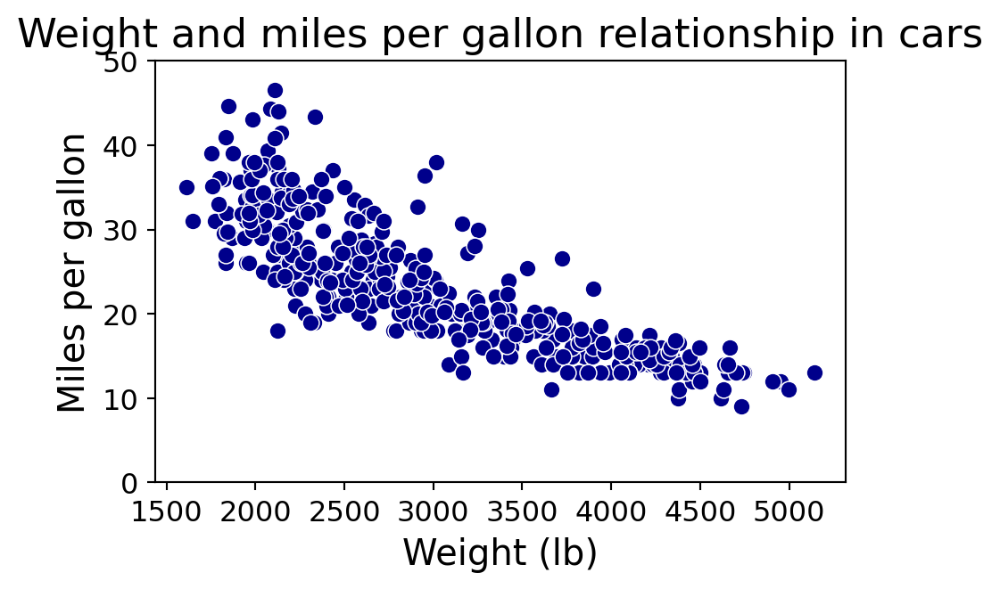
If necessary, we can also adjust the horizontal axis to show 0 as well. To this end, we use the xlim() function.
Code
# Create the scatter plot with custom color and size
plt.figure(figsize=(7, 5))
sns.scatterplot(data=auto_data, x="weight", y="mpg", color="darkblue", s=50)
# Set y-axis limits
plt.ylim(0, 50)
# Set x-axis limits
plt.xlim(0, 5500)
# Customize the plot
plt.title("Weight and miles per gallon relationship in cars", fontsize=17)
plt.xlabel("Weight (lb)", fontsize=15)
plt.ylabel("Miles per gallon", fontsize=15)
plt.yticks(fontsize=12)
plt.xticks(fontsize=12)
# Show the plot
plt.show()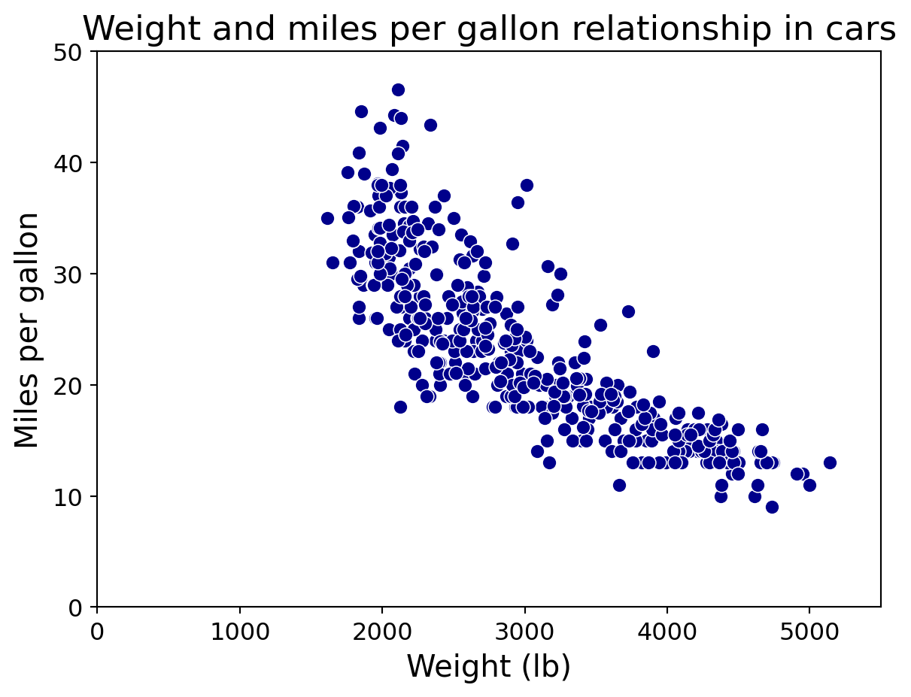
Individual graphs
Individual variable graphs (such as histograms) do not allow us to study the relationship between two variables. They only provide information on the distribution of each variable.
Code
plt.figure(figsize=(4, 3))
sns.histplot(data=auto_data, x="mpg", color="darkblue", edgecolor="black")
plt.title("Distribution of miles per gallon", fontsize=17)
plt.xlabel("Miles per gallon", fontsize=15)
plt.ylabel("Frequency", fontsize=15)
plt.yticks(fontsize=12)
plt.xticks(fontsize=12)
plt.show()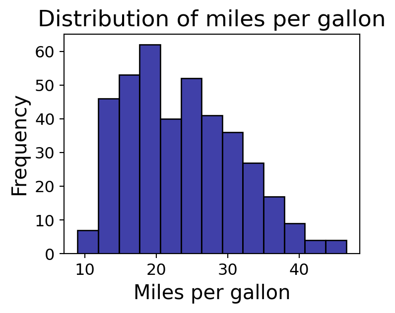
Code
plt.figure(figsize=(4, 3))
sns.histplot(data=auto_data, x="weight", color="darkblue", kde=False, edgecolor="black")
plt.title("Distribution of weight", fontsize=17)
plt.xlabel("Weight (lb)", fontsize=15)
plt.ylabel("Frecuencia", fontsize=15)
plt.yticks(fontsize=12)
plt.xticks(fontsize=12)
plt.show()
Line graph
A line graph is a visual representation of data where data points are connected by a line. Axes:
- \(X\) (horizontal): Represents time or the independent variable.
- \(Y\) (vertical): Represents the dependent variable.
Each point represents a value at a given moment.
. . .
The objective is to explore trends over time or the evolution of a continuous variable.
Example 2
Consider the data in the file “spotify.xlsx”. This dataset contains the global daily streams of the top five most popular songs on the music streaming service Spotify in 2017.
spotify_data = pd.read_excel("spotify.xlsx")spotify_data.head(4)| Date | Day | Shape of You | Despacito | Something Just Like This | HUMBLE. | Unforgettable | |
|---|---|---|---|---|---|---|---|
| 0 | 2017-01-06 | 1 | 12287078 | NaN | NaN | NaN | NaN |
| 1 | 2017-01-07 | 2 | 13190270 | NaN | NaN | NaN | NaN |
| 2 | 2017-01-08 | 3 | 13099919 | NaN | NaN | NaN | NaN |
| 3 | 2017-01-09 | 4 | 14506351 | NaN | NaN | NaN | NaN |
We will focus on the song Despacito by Luis Fonsi. To construct line plots, we use the function lineplot() in seaborn.
plt.figure(figsize=(7, 5))
sns.lineplot(data = spotify_data, x = "Date", y = "Despacito")
plt.show()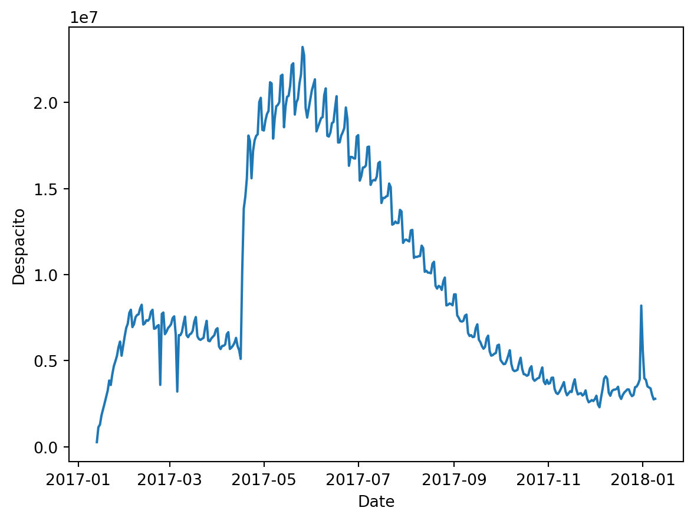
Applying Principle 3
We can change various aspects of the graph using additional arguments linestyle, linewidth, and color.
sns.lineplot(data = data_set, x = x, y = Y, linestyle, linewidth, color).
Code
# Create the line plot
plt.figure(figsize=(10, 6))
sns.lineplot(data=spotify_data, x="Date", y="Despacito", linestyle = '-',
color="darkblue", linewidth=1.3)
plt.title("Popularity of the song Despacito by Luis Fonsi", fontsize=16)
plt.xlabel("Date", fontsize=12)
plt.ylabel("Number of plays on Spotify", fontsize=15)
plt.yticks(fontsize=12)
plt.xticks(fontsize=12)
plt.show()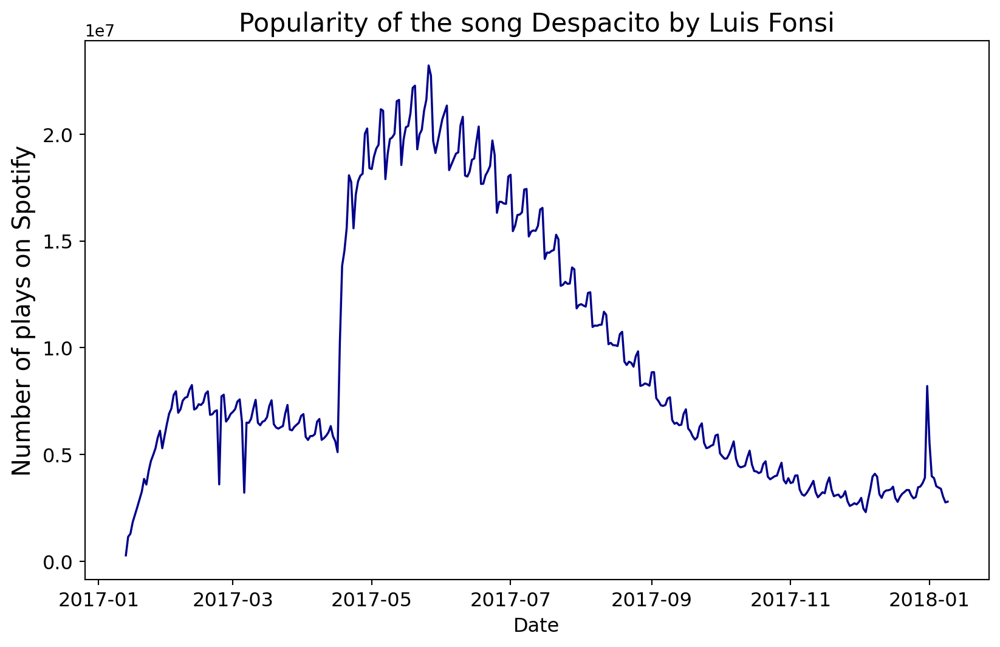
Line styles
To change the line type, set the linestyle parameter to a character shown below.
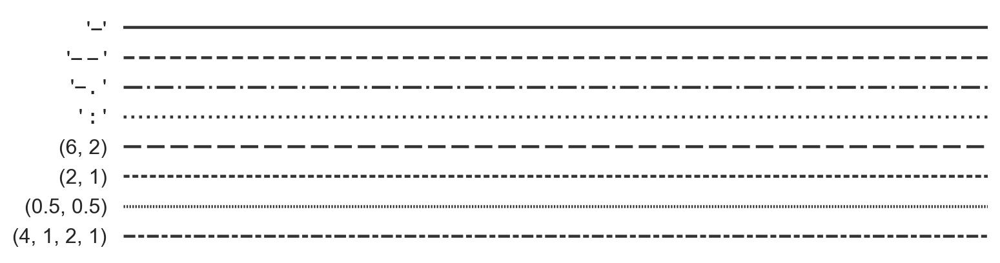
A Categorical and a Numerical Variable
Divide the data into groups!
To examine the relationship between a numerical and a categorical variable, we use the categorical variable to divide the data into groups. This way, we compare the distribution of the numerical variable among these groups.
. . .
In this context:
- \(X\) is the categorical variable.
- \(Y\) is the numerical variable.
. . .
The side-by-side boxplot is the most effective way to study the relationship between a categorical and a numerical variable.
Boxplot by groups
The side-by-side boxplot compares the distribution of a variable across different groups.
In seaborn, the plot is obtained using the function:
sns.boxplot(data = data_set, x = X, y = Y).
For example, if we want to compare the distributions of miles per gallon of cars built in America, Europe, or Japan, we use the following command:
plt.figure(figsize=(7, 5))
sns.boxplot(data = auto_data, x = "origin", y = "mpg")
plt.show() 
Applying Principle 3
Code
plt.figure(figsize=(7, 5))
sns.boxplot(data=auto_data, x="origin", y="mpg", color="lightblue")
plt.title("Miles per Gallon Distribution by Origin", fontsize=17)
plt.xlabel("Origen", fontsize=15)
plt.ylabel("Miles per gallon", fontsize=15)
plt.yticks(fontsize=12)
plt.xticks(fontsize=12)
plt.show()
We can also change the format of outlier points using the arguments marker, markersize, and markerfacecolor inside the argument flierprops in sns.boxplot.
Code
plt.figure(figsize=(6, 4))
sns.boxplot(data=auto_data, x="origin", y="mpg", color="lightblue",
flierprops=dict(marker="o", markerfacecolor="purple", markersize=8))
plt.title("Miles per Gallon Distribution by Origin", fontsize=17)
plt.xlabel("Origen", fontsize=15)
plt.ylabel("Miles per gallon", fontsize=15)
plt.yticks(fontsize=12)
plt.xticks(fontsize=12)
plt.show()
Plotting statistical summaries by groups
Alternatively, we can summarize the values of the numerical variable \(Y\) for each category of the variable \(X\) using the median or the mean.
For example, let’s plot the average miles per gallon of cars produced in America, Europe, and Japan. First, we calculate the average for each category using .groupby() and mean().
sum_auto = (auto_data
.filter(['mpg', 'origin'], axis = 1)
.groupby(["origin"], observed = True)
.agg(meanMPG = ("mpg", "mean"))
) The data to be plotted are:
sum_auto| meanMPG | |
|---|---|
| origin | |
| American | 20.083534 |
| European | 27.891429 |
| Japanese | 30.450633 |
Two common visualization types for plotting a numerical and a discrete variable when there is only one value per category are:
- Cleveland dot plot
- Bar chart
Cleveland dot plot
The Cleveland dot plot encodes quantitative data across different categories. It is an alternative to a bar chart. It is obtained using the function scatterplot().
plt.figure(figsize=(8, 6))
sns.scatterplot(data=sum_auto, x='meanMPG', y='origin')
plt.title("Average Miles per Gallon by Origin", fontsize=17)
plt.xlabel("Average Miles Per Gallon", fontsize=15)
plt.ylabel("Origen", fontsize=15)
plt.show() 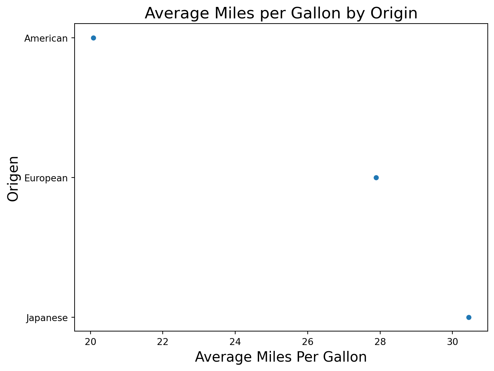
Improving the plot
We apply Principle 3 to improve the plot.
Code
plt.figure(figsize=(7, 5))
sns.scatterplot(data=sum_auto, x='meanMPG', y='origin', s=100, color='pink')
plt.title("Average Miles per Gallon by Origin", fontsize=17)
plt.xlabel("Average Miles Per Gallon", fontsize=15)
plt.ylabel("Origen", fontsize=15)
# Set x-axis limits
plt.xlim(0, 35)
plt.grid() # Add a grid
plt.show() 
Bar chart
To create a bar chart where the bar length equals a specific value, we use the function barplot() from the seaborn.
plt.figure(figsize=(5, 3))
sns.barplot(data=sum_auto, x='meanMPG', y='origin')
plt.title("Average Miles per Gallon by Origin")
plt.xlabel("Average Miles Per Gallon")
plt.ylabel("Origen")
plt.show() 
We can use similar commands as the Cleveland dot plot to improve the bar chart.
Code
plt.figure(figsize=(7, 5))
sns.barplot(data=sum_auto, x='meanMPG', y='origin', color='lightblue')
plt.title("Average Miles per Gallon by Origin", fontsize=17)
plt.xlabel("Average Miles Per Gallon", fontsize=15)
plt.ylabel("Origen", fontsize=15)
plt.xlim(0, 35)
plt.show()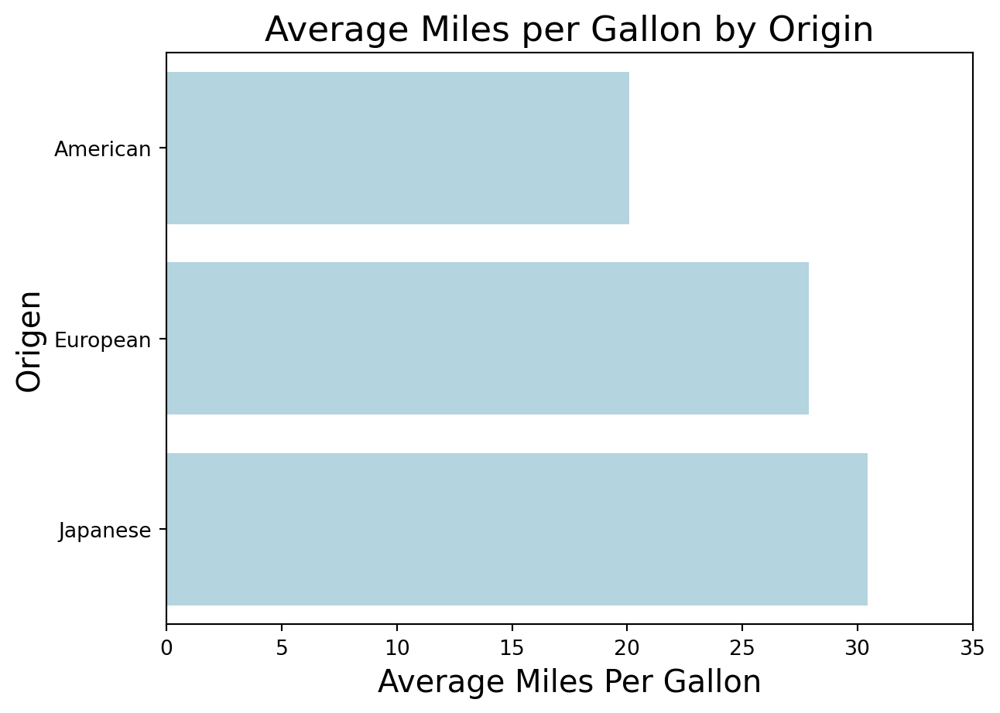
Two Categorical Variables
Divide the data into groups!
With two categorical variables, we compare the distribution of one variable across subgroups defined by the other variable.
In fact, we keep one variable constant and plot the distribution of the other.
. . .
To do this, the most popular charts are extensions of bar graphs:
- Stacked bar charts
- Side-by-side bar charts
Example 3
As an example, let’s consider the data in the file “penguins.xlsx”.
penguins_data = pd.read_excel("penguins.xlsx")
penguins_data.head()| species | island | bill_length_mm | bill_depth_mm | flipper_length_mm | body_mass_g | sex | year | |
|---|---|---|---|---|---|---|---|---|
| 0 | Adelie | Torgersen | 39.1 | 18.7 | 181.0 | 3750.0 | male | 2007 |
| 1 | Adelie | Torgersen | 39.5 | 17.4 | 186.0 | 3800.0 | female | 2007 |
| 2 | Adelie | Torgersen | 40.3 | 18.0 | 195.0 | 3250.0 | female | 2007 |
| 3 | Adelie | Torgersen | NaN | NaN | NaN | NaN | NaN | 2007 |
| 4 | Adelie | Torgersen | 36.7 | 19.3 | 193.0 | 3450.0 | female | 2007 |
The data has two categorical variables:
- The species of penguins (
species). - The island they come from (
island).
Make sure they are specified as factor in Python!
penguins_data[['species', 'island', 'sex']] = (penguins_data
.filter(['species', 'island', 'sex'], axis = 1)
.astype('category')
)Stacked bar chart
The stacked bar chart is generated using the histplot() function, assigning the \(X\) variable to the hue argument and setting multiple='stack'.
. . .
For example, to study the distribution of penguin species across the three different islands, we use the following:
plt.figure(figsize=(8, 6))
sns.histplot(data=penguins_data, x='species', hue='island',
multiple='stack')
plt.title("Distribution of Penguin Species by Island", fontsize=17)
plt.xlabel("Species", fontsize=15)
plt.ylabel("Count", fontsize=15)
plt.show()The chart shows the frequency of each species, separated by island name.
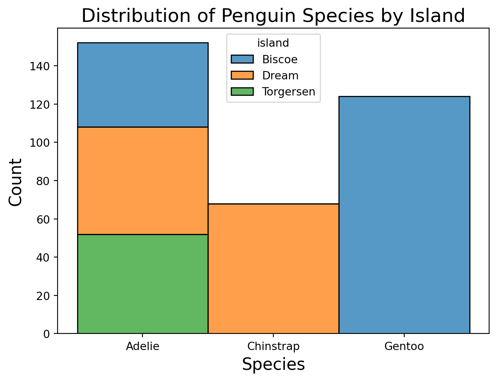
Side-by-side bar chart
An alternative to the previous chart is to place the bars side by side for the categories of the \(X\) variable.
In this case, we use the countplot() function of seaborn.
plt.figure(figsize=(8, 6))
sns.countplot(data=penguins_data, x='species', hue='island')
plt.title("Distribution of Penguin Species by Island", fontsize=17)
plt.xlabel("Species", fontsize=15)
plt.ylabel("Count", fontsize=15)
plt.show()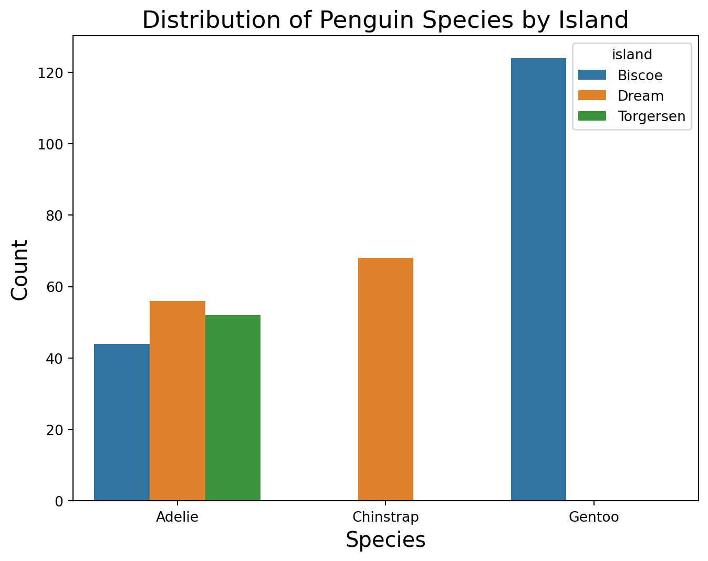
Stacked or side-by-side?
The main difference between stacked and side-by-side bar charts is that the side-by-side chart shows values in separate bars within a category.
Advantages of stacked bars:
Easier to understand what proportions of a whole are divided among segments.
Visually adds up each proportion.
Advantages of side-by-side bars:
Easier to compare the heights of each individual entity.
Better for comparing between groups.
Statistical summaries
For categorical variables, the most common statistical summaries are frequency and relative frequency.
With pandas, we calculate frequency using the .size(), function, which counts the unique values of one or more variables. We also use .groupby() to compute the distribution by categorical variables.
count_data = (penguins_data
.groupby(['island', 'species'], observed = True)
.size()
.reset_index(name='count')
)# Show the result
print(count_data) island species count
0 Biscoe Adelie 44
1 Biscoe Gentoo 124
2 Dream Adelie 56
3 Dream Chinstrap 68
4 Torgersen Adelie 52To calculate relative frequency, we use .assign() along with the lambda, function, which calculates the proportions of a column.
rel_freq_table = (penguins_data
.groupby(['island', 'species'], observed = True)
.size()
.reset_index(name='count')
.assign(Proportion = lambda df: df["count"]/df["count"].sum())
)
print(rel_freq_table) island species count Proportion
0 Biscoe Adelie 44 0.127907
1 Biscoe Gentoo 124 0.360465
2 Dream Adelie 56 0.162791
3 Dream Chinstrap 68 0.197674
4 Torgersen Adelie 52 0.151163More than One Variable
Charts for three variables
When examining a distribution or relationship, we often want to compare it across data subgroups.
This process of conditioning on additional variables leads to visualizations involving three or more variables.
Here we explain how to create charts to visualize multiple variables.
Scatter plot by color
For two numerical variables and one categorical variable.
plt.figure(figsize=(6.2, 4.2))
sns.scatterplot(data = auto_data, x='weight', y='mpg', hue='origin')
plt.xlabel("Weight (lb)")
plt.ylabel("Miles per Gallon (MPG)")
plt.show() 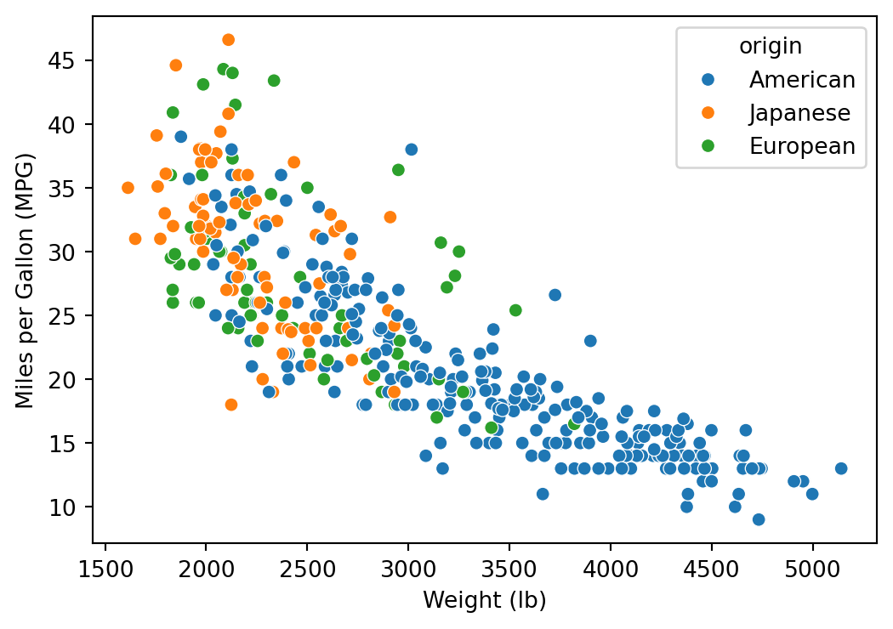
Faceted or lattice plot
A faceted plot visualizes the relationship or distribution of one or two variables for each subgroup defined by a third variable \(Z\).
. . .
Idea: Create a chart for each subgroup of \(Z\).
. . .
To create the plot, use the FacetGrid() function in seaborn with the following syntax:
plt.figure(figsize=(8, 6))
g = sns.FacetGrid(auto_data, col='origin')
g.map(sns.scatterplot, 'weight', 'mpg')
g.set_axis_labels("Weight (lb)", "Miles per Gallon (MPG)")
g.set_titles("{col_name} Origin")
plt.show()The function produces a grid with 1 column and 3 rows of charts. Each row accommodates one category of origin.
<Figure size 768x576 with 0 Axes>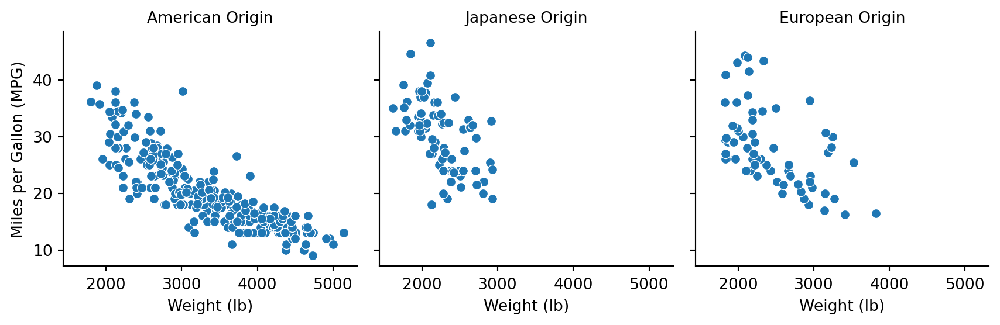
Multiple line charts
We can use the functions lineplot() and FacetGrid() to visualize the evolution of play counts for the 5 songs in the file “spotify.xlsx” over time.
However, we need to manipulate the data to obtain the format required by these functions.
The required format
For a multiple line chart, we need to merge the columns Shape of You, Despacito, Something Just Like This, HUMBLE and Unforgettable into two columns.
One column will contain the number of plays, and the other will contain the song title.
Both columns will be ordered by the variable Date.
To format the data, we use the melt() function from the pandas library.
data_lines = spotify_data.melt(id_vars=["Date"],
value_vars=["Shape of You", "Despacito", "Something Just Like This", "HUMBLE.", "Unforgettable"],
var_name="Song",
value_name="Plays")data_lines.head()| Date | Song | Plays | |
|---|---|---|---|
| 0 | 2017-01-06 | Shape of You | 12287078.0 |
| 1 | 2017-01-07 | Shape of You | 13190270.0 |
| 2 | 2017-01-08 | Shape of You | 13099919.0 |
| 3 | 2017-01-09 | Shape of You | 14506351.0 |
| 4 | 2017-01-10 | Shape of You | 14275628.0 |
Now, we apply similar functions to the data_lines object.
Code
# Create the line plot and facet by 'Cancion'
plt.figure(figsize=(8, 6))
g = sns.FacetGrid(data_lines, col='Song')
g.map(sns.lineplot, 'Date', 'Plays')
# Customize the plot
g.set_axis_labels("Date", "Plays")
g.set_titles("{col_name} Song")
# Rotate the x-axis labels for better readability
for ax in g.axes.flat:
ax.set_xticklabels(ax.get_xticklabels(), rotation=90)
# Show the plot
plt.show()<Figure size 768x576 with 0 Axes>
Or we can plot all lines on a single chart.
Code
# Create the line plot with color mapped to 'Cancion'
plt.figure(figsize=(7, 5))
sns.lineplot(x='Date', y='Plays', hue='Song', data=data_lines)
# Customize the plot
plt.title("Plays by Song Over Time")
plt.xlabel("Date")
plt.ylabel("Plays")
plt.xticks(rotation=90) # Rotate x-axis labels for better readability
# Show the plot
plt.show()
Applying Principle 3
Code
# Create the line plot with color mapped to 'Cancion'
plt.figure(figsize=(7.8, 5.8))
sns.lineplot(x='Date', y='Plays', hue='Song', data=data_lines)
# Customize the plot
plt.title("Plays by Song Over Time", fontsize = 17)
plt.xlabel("Date", fontsize = 12)
plt.ylabel("Plays", fontsize = 12)
# Show the plot
plt.show()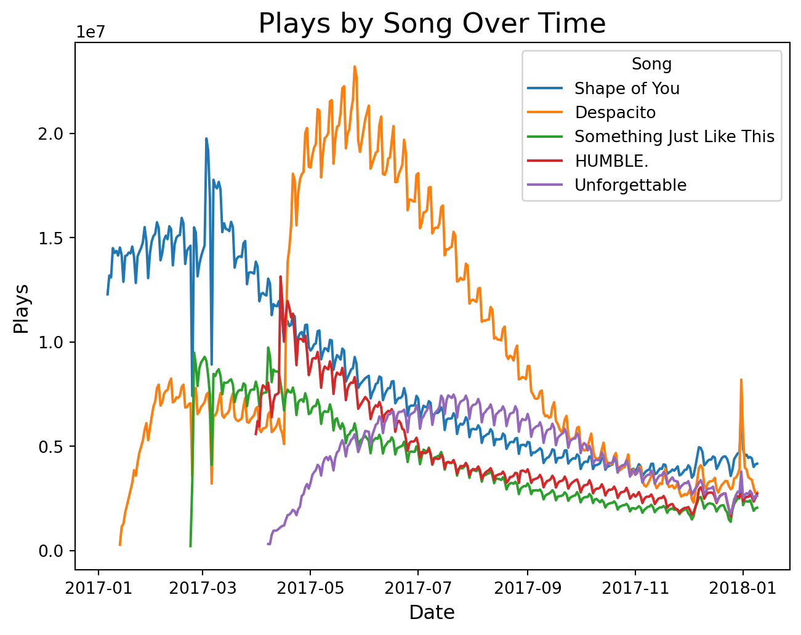
Graphs for four variables
A common chart for four variables is the scatter plot, where the color and size of the symbols depend on two categorical variables.
plt.figure(figsize=(8, 6))
sns.scatterplot(data=penguins_data, x='bill_depth_mm', y='bill_length_mm',
hue='species', size='island')
plt.xlabel("Bill Depth (mm)")
plt.ylabel("Bill Length (mm)")
plt.title("Penguin Bill Dimensions by Species and Island")
plt.show()